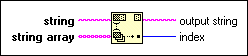

Match First String Function
Owning Palette: Additional String VIs and Functions
Requires: Base Development System
Compares each prefix string in string array to the beginning of string until it encounters a match. This function returns the original input string with the matching prefix string removed.

 Add to the block diagram Add to the block diagram |
 Find on the palette Find on the palette |